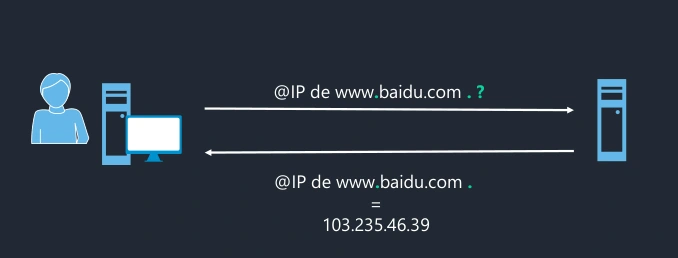
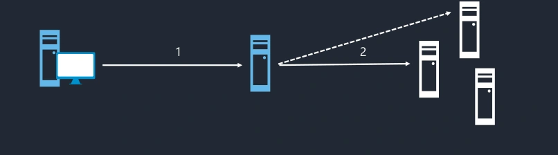

Module 05 — DNS résolveur¶
La transcription du support Drive et l’aide pédagogique sont séparées pour rendre leur provenance explicite.
SOURCE DRIVE · TRANSCRIPTION DU SUPPORT
Le contenu des documents du dossier TSSR est transcrit ci-dessous, page par page. Les textes et tableaux sont intégrés à la page Web. Aucun fichier PDF, aucune diapositive entière ni aucune reproduction de page n’est affiché. Seuls des croquis ou visuels isolés et vérifiés peuvent accompagner la transcription. Les versions et les consignes restent celles des supports de formation. Les compléments IA sont conservés dans leur onglet distinct.
Support · Module 05 - Support de cours · 10 pages transcrites
Services réseau en environnement Linux
Module 05 – DNS Résolveur
DNS Partie 1
Objectifs
- Comprendre le fonctionnement du service DNS
- Mettre en place un serveur DNS résolveur
DNS Partie 1
Fonctionnement du service
DNS
Fonctionnement du service DNS
Fonctionnement DNS
- Le service DNS va, entre autres, permettre :
- De faire la correspondance entre un FQDN et une adresse IP
- Et inversement, d'indiquer le nom d'hôte à partir d'une IP
- De connaître les serveurs de messagerie d'un domaine
- Service essentiel au fonctionnement d'Internet
- Protocole standardisé par l'IETF
Fonctionnement du service DNS
Fonctionnement DNS
Toute machine (client, serveur, mobile, etc.) va constamment faire des requêtes sur le serveur DNS associé pour obtenir des IP.


L’exemple du support demande l’adresse de www.baidu.com. Le serveur répond 103.235.46.39.
@IP de www.baidu.com . ?
@IP de www.baidu.com .
= 103.235.46.39
Fonctionnement du service DNS
Fonctionnement DNS
- La structure de nommage du DNS est arborescente.
- Une URL va se lire de la droite vers la gauche pour descendre l'arborescence DNS.
- Le séparateur de « niveau » est le point.
- Les domaines dits TLD (Top Level Domain) sont gérés par l'IANA.
Fonctionnement du service DNS
Nom d’hôte pleinement qualifié
Le schéma affiche https://www.indiatimes.com.. Les repères (1), (2) et (3) identifient les points expliqués dans le tableau.
| Élément | Signification |
|---|---|
| . (1) | Le point par lequel se termine tout nom de domaine représente la racine de l’espace de nom DNS. |
| com. | Nom de domaine, sous-domaine du domaine racine |
| . (2) | Point / caractère de séparation entre domaines |
| indiatimes.com. | Nom de domaine, sous-domaine du domaine « com. » |
| . (3) | Point / caractère de séparation entre le nom du domaine et le nom d’un hôte de ce domaine |
| www.indiatimes.com. | Nom d’hôte pleinement qualifié |
Noms de domaine internes et publics
- Le protocole DNS peut aussi être utilisé pour des domaines non résolvables sur Internet pour des réseaux internes.
- On utilise alors des suffixes non publics.
| Domaine | Utilité |
|---|---|
| masuperentreprise.bzh | Nom de domaine utilisé pour référencer les services de mon entreprise accessibles depuis l’Internet |
| enigmes.corp | Nom de domaine propre à mon entreprise dans lequel sont référencées les ressources hébergées et accessibles uniquement localement dans l’entreprise |
Fonctionnement du service DNS
Fonctionnement DNS
- On distingue deux « types » de résolution DNS :
- Résoudre les requêtes clientes relatives à tout domaine => résolveur DNS complet
- Être source d'information pour un ou plusieurs domaines ciblés => DNS faisant autorité
DNS Partie 1
Le DNS résolveur
Le DNS résolveur
Rôle
- Un serveur DNS résolveur complet doit répondre aux requêtes des clients.
- Pour y répondre, il doit faire appel à d'autres serveurs DNS.
- Il n'est pas source d'information de domaines.


1. Le client adresse sa requête au résolveur. 2. Le résolveur interroge les autres serveurs DNS.
1 2
Le DNS résolveur
Fonctionnement
- Un serveur DNS résolveur complet interroge avec des requêtes itératives :
- Les serveurs DNS racines
- Les serveurs DNS faisant autorité sur les TLD
- Les serveurs DNS faisant autorité sur le domaine
- Il peut utiliser un serveur DNS « redirecteur » (forwarder) pour limiter les requêtes qu'il va faire.
Le DNS résolveur
Fonctionnement
- On parle de redirecteur inconditionnel quand un serveur DNS lui adresse des requêtes récursives pour résoudre TOUTES les requêtes des clients.
- On parle de redirecteur conditionnel pour indiquer pour un espace de nom donné le serveur à qui adresser la requête récursive de résolution.
- Les deux peuvent être complémentaires.
Le DNS résolveur
Fonctionnement
- Les serveurs DNS gardent les réponses des requêtes en cache.
- La durée de conservation en cache est définie par les serveurs faisant autorité sur l'enregistrement.
DNS Partie 1
Mise en place serveur
DNS résolveur
Mise en place serveur DNS résolveur
Mise en place
- Le serveur DNS utilisé est bind9
| Nom du paquet | bind9 |
| Fichier de configuration | /etc/bind/named.conf (découpé en plusieurs fichiers inclus) |
| Nom du service | bind9 |
| Commandes | named-checkconf named-checkzone rndc |
| Fichier journal | /var/log/syslog |
Mise en place serveur DNS résolveur
Mise en place
- Le fichier de configuration inclut d'autres fichiers :
/etc/bind/named.conf
| Instruction | Rôle |
|---|---|
| include /etc/bind/named.conf.options ; | Configuration des options |
| include /etc/bind/named.conf.local ; | Configuration des zones hébergées localement |
| include /etc/bind/named.conf.default-zones ; | Configuration des zones par défaut |
Mise en place serveur DNS résolveur
DNS résolveur
- Fichier /etc/bind/named.conf
- définition d’ACLs et des includes
Transcription du détail du support.
// rsxclts = réseaux des postes clients de l’entreprise
acl rsxclts { 127.0.0.0/8; 192.168.53.0/24; 192.168.1.0/24; };
include /etc/bind/named.conf.options ;
include /etc/bind/named.conf.local;
include /etc/bind/named.conf.default-zones ;Mise en place serveur DNS résolveur
DNS résolveur
- Fichier /etc/bind/named.conf.options
Transcription du détail du support.
options {
// Répertoire de travail de Bind9
directory "/var/cache/bind";
// Redirection exclusive (pas d’appel aux racines en cas d’indisponibilité)
// vers les serveurs quad9
forward only;
forwarders { 9.9.9.9; };
// Restriction des hôtes auxquels répond le serveur
allow-query { rsxclts; };
// Restriction des hôtes autorisés à adresser des requêtes récursives
allow-recursion { rsxclts; };
// Communication DNSSEC désactivée
dnssec-enable no;
dnssec-validation no;
// Information de version non communiquée
version none;
};Mise en place serveur DNS résolveur
DNS résolveur
- Fichier /etc/bind/named.conf.default-zones
- Définit les zones par défaut
- Définit les adresses des serveurs racines
- Aucun changement à appliquer
- Fichier /etc/bind/named.conf.local sera vu dans la seconde partie sur le DNS
Référence du document : 1FH2JveLw64dsNm5dgFXqMSiz7DAdCg9P · SHA-256 e323a04269a38662…
Énoncé · M05 - Enonc‚ du TP1 - Configurer un serveur DNS resolveur · 2 pages transcrites
Le nom du fichier Drive présente une anomalie historique d’encodage. Son nom est conservé ; le titre interne est transcrit dans le document. Les noms et chemins de formation portant le nom de l’éditeur ont été neutralisés. Les adresses numériques et les consignes restent celles de la source.
Configurer un serveur DNS résolveur
TP 01 du Module 05 – DNS résolveur
Avant de démarrer ce TP, il convient d’avoir suivi les vidéos des modules 1 à 5 et d’avoir réalisé les TP proposés.
Durée estimée
1 heure
Énoncé
Objectifs
- Intégrer un service DNS résolveur dans une infrastructure réseau existante.
- Faire des tests de résolution DNS.
Prérequis
- Les ateliers précédents doivent être fonctionnels
Notes
- Pour toutes les configurations réseau, vous remplacerez num_stag par un chiffre entre 1 et 30, par exemple 10.
Etape 1 - Installation et configurer le service DNS Bind9 sur DEB-S2
- Installer le service Bind9.
- Depuis les options de configuration du service, désactiver DNSSEC et autoriser les requêtes provenant des réseaux LAN Clients et LAN Serveurs.
- Redémarrer le service pour prendre en compte les modifications apportées.
Etape 2 - Modification de la configuration cliente DNS des postes
- Installer le paquet dnsutils sur le poste Cli-db-10.
- Modifier la configuration cliente DNS de la machine Cli-db-10 afin qu’il interroge DEB- S2.
- Modifier la configuration cliente DNS des serveurs DEB-S1, DEB-S2 et RouTux afin qu’ils interrogent DEB-S2.
Etape 3 - Test de résolution depuis le client
- Depuis votre machine physique, tester la résolution de l’hôte www.isc.org et yahoo.fr.
Ces tests ont-ils abouti ? Quelles sont les adresses IP des hôtes requêtés ?
- Depuis le poste Cli-db-10, réitérer les tests de résolution effectués précédemment :
www.isc.org
www.yahoo.fr
D’après vous, quel mécanisme votre serveur utilise-t-il actuellement pour résoudre les noms d’hôtes publics ?
Etape 4 - Configuration de Bind9 pour faire appel aux services de redirecteur
- Sur DEB-S2, modifier la configuration du service Bind9 afin qu’il fasse appel au redirecteur FAI (ou l’adresse IP d’un forwarder extérieur) pour résoudre les noms d’hôte publics.
- Refaire les tests de résolution précédents.
Référence du document : 1kfMjKNds6yO0dYORj33pnaXthVCdKnzz · SHA-256 56291e922b65c321…
Correction · M05 - Solution du TP1 - Configurer un serveur DNS resolveur · 2 pages transcrites
Les noms et chemins de formation portant le nom de l’éditeur ont été neutralisés. Les adresses numériques et les consignes restent celles de la source.
Correction originale : à consulter après avoir tenté l’exercice.
Configurer un serveur DNS résolveur
TP 01 du Module 05 – DNS résolveur
Avant de démarrer ce TP, il convient d’avoir suivi les vidéos des modules 1 à 5 et d’avoir réalisé les TP proposés.
Durée estimée
1 heure
Solution
Etape 1 - Installation et configurer le service DNS Bind9 sur DEB-S2
- Installer le service Bind9 :
# apt install bind9Configuration dans /etc/bind/named.conf.local
dnssec-validation no ;
allow-recursion {
172.18.X.0/24;
192.168.X.0/24;
};Test et reload de la configuration
# named-checkconf # rndc reloadEtape 2 - Modification de la configuration cliente DNS des postes
- Installer le paquet dnsutils sur le poste Cli-db-10 :
# apt install dnsutilsSur deb-s1 et les autres :
# vi /etc/resolv.conf nameserver 192.168.X.12Etape 3 - Test de résolution depuis le client
D’après vous, quel mécanisme votre serveur utilise-t-il actuellement pour résoudre les noms d’hôtes publics ?
Les Serveurs racines via configuration par défaut
Fichier /usr/share/dns/root.hints chargé dans named.conf.default-zones
Pour tester, il est possible d’utiliser soit :
- la commande ping
- la commande dig
A tester :
www.isc.org
www.yahoo.fr
Etape 4 - Configuration de Bind9 pour faire appel aux services de redirecteur
Rajouter le ou les forwarders :
# vi /etc/bind/named.conf.options
forwarders {
66.55.44.33;
};Tester et relancer : # named-checkconf # rndc reload # rndc flush => pour vider le cache serveur
Référence du document : 1ctD0FWwFAWraAtkhNLLyRctR3gZuILaS · SHA-256 530e0fdccc58a38c…
Complément IA / externe au cours — fiche pédagogique du portail
Cette fiche contient une reformulation et des aides d’apprentissage rédigées par IA. Elle est distincte de la transcription des documents du Drive et ne la remplace pas. Les schémas de synthèse de cette fiche sont des illustrations IA / externes au cours, sauf les captures explicitement attribuées à un document source.
Objectifs¶
- Situer un FQDN et distinguer résolveur, redirecteur et autorité.
- Limiter les requêtes récursives de BIND au périmètre du laboratoire.
- Comparer les réponses avant et après configuration d’un redirecteur.
- Vérifier la résolution configurée côté client et le chemin réellement utilisé.
Les noms et les réponses DNS¶
DNS permet de trouver les adresses d’un hôte, le nom associé à une adresse quand une zone inverse le publie, ou les serveurs de messagerie d’un domaine. Un FQDN, Fully Qualified Domain Name, décrit la position complète d’un nom dans l’arborescence DNS. Le point final représente la racine. En lisant www.indiatimes.com. depuis la racine, on passe par com., puis indiatimes.com., puis l’hôte www.
Le support place un schéma https:// devant son exemple. La hiérarchie DNS porte sur la partie nom d’hôte de l’URL. Le schéma, le port et le chemin appartiennent à d’autres éléments de l’URL. Les TLD se trouvent sous la racine. Les zones publiques et privées suivent la même organisation en labels. Le support illustre une zone interne et une zone publiée sur Internet avec deux noms distincts.
Autorité, résolution et cache¶
| Rôle | Travail effectué |
|---|---|
| Client | Demande une réponse au résolveur configuré |
| Résolveur récursif | Recherche la réponse et peut la garder en cache |
| Serveur faisant autorité | Publie les données de sa zone |
| Redirecteur | Effectue la résolution des requêtes transmises par le résolveur |
Dans le parcours itératif illustré par le support, le résolveur contacte une racine. Elle lui indique les serveurs du TLD. Ces serveurs le dirigent vers l’autorité du domaine. Les délégations orientent la recherche jusqu’à l’autorité pertinente. Un cache déjà renseigné réduit les interrogations. Le TTL limite la durée pendant laquelle une réponse peut être réutilisée.
Le support présente deux formes de redirection. La redirection générale traite les recherches non couvertes localement. La redirection conditionnelle cible un espace de noms, par exemple une zone d’un partenaire. Les deux peuvent coexister. Avec BIND, forward only réserve les recherches transférées aux redirecteurs configurés. Avec forward first, BIND peut poursuivre selon son propre mécanisme si les redirecteurs échouent. Référence BIND 9.
Préparer le résolveur BIND de DEB-S2¶
| Élément | Rôle dans la distribution du TP |
|---|---|
bind9 |
Paquet et nom de service du support |
/etc/bind/named.conf |
Point d’entrée et inclusions |
/etc/bind/named.conf.options |
Options du serveur et redirecteurs |
/etc/bind/named.conf.local |
Déclarations de zones locales étudiées au module 7 |
/etc/bind/named.conf.default-zones |
Zones fournies par défaut et configuration de la racine selon le paquet |
named-checkconf, named-checkzone, rndc |
Contrôles et administration de BIND |
Le chemin historique /var/log/syslog dépend du service de journalisation installé. systemctl status et journalctl -u permettent d’identifier l’unité et ses messages sur la machine réelle. Le TP installe dnsutils sur le client pour employer dig.
Le scénario limite la récursion aux LAN Clients et Serveurs. Dans le bloc options existant, déclarer la politique de récursion, puis indiquer les réseaux admis. L’exemple complémentaire prend X=10 et conserve la validation DNSSEC. Dans un fichier inclus, placer l’ACL au niveau global, puis les options dans le bloc options existant.
acl lab_clients {
127.0.0.1;
172.18.10.0/24;
192.168.10.0/24;
};
options {
directory "/var/cache/bind";
recursion yes;
allow-query { lab_clients; };
allow-recursion { lab_clients; };
dnssec-validation auto;
};
Correction de contexte
La solution historique place des directives de récursion et de validation dans named.conf.local. Elles s’insèrent dans le bloc de configuration prévu par BIND, généralement options pour la politique du serveur de ce TP. Le support demande aussi de désactiver DNSSEC pour son laboratoire. La validation DNSSEC contrôle l’authenticité et l’intégrité des données signées. BIND 9.18 rejette l’option dnssec-enable des captures. Conserver la validation dans le scénario courant et examiner la version utilisée. Référence BIND 9, Notes de version BIND 9.18.
TP guidé — Comparer la résolution avant et après redirection¶
- Valider la configuration avec
named-checkconf, puis appliquer la modification avecrndc reloadou le mécanisme de l’unité installée. - Diriger Cli-db-10, DEB-S1, DEB-S2 et RouTux vers
192.168.X.12avec leur gestionnaire réseau respectif. - Interroger explicitement le résolveur, puis effectuer la même recherche en utilisant le DNS configuré sur le poste.
- Renseigner les redirecteurs voulus dans
options, valider et recharger. Le corrigé proposerndc flushpour vider son cache avant comparaison.
Comparer le code de réponse, le serveur interrogé, les enregistrements et leur TTL. Les IP publiques relevées dans la source correspondent à ses observations. Pour établir le mécanisme emprunté par BIND, rapprocher la configuration et les traces réseau ou journaux des recherches. Un résultat identique côté client peut provenir du cache, d’un redirecteur ou du chemin itératif. La commande dig +trace lance une recherche itérative depuis son propre poste.
Exemple de redirection du laboratoire à ajouter au bloc options après le test itératif.
Preuves à relever¶
| Essai | Relevé attendu |
|---|---|
| Service BIND sur DEB-S2 | Unité active, contrôle de syntaxe réussi et client inclus dans l’ACL. |
| Requête explicite avant redirection | Réponse et serveur 192.168.X.12, avec code, type et TTL. |
| Même requête avec le DNS du poste | Serveur configuré pour le profil actif et résultat pour les deux noms du TP. |
| Après redirection | Politique appliquée et chemin observé dans la configuration, les journaux ou une trace autorisée. |
Schéma explicatif complémentaire¶
Illustration IA / externe au cours — schéma pédagogique de synthèse.
À retenir¶
Le client demande une réponse au DNS configuré. Le résolveur peut répondre depuis son cache, chercher auprès des autorités ou transmettre. Pour prouver le chemin, comparer la configuration et les traces du résolveur, en plus du résultat côté client.
Mini-quiz — 5 questions¶
- Que représente le point final d’un FQDN ?
- Quelle différence entre une autorité et un résolveur ?
- Que permet forward first après un échec du redirecteur ?
- Pourquoi comparer dig @adresse et dig sans adresse ?
- Deux requêtes donnent la même IP. Est-ce une preuve du même chemin ?
Réponses commentées
- La racine de la hiérarchie DNS.
- L’autorité publie les données de sa zone. Le résolveur recherche ou transmet la requête pour le client.
- BIND peut poursuivre la recherche lui-même selon sa configuration, contrairement à forward only pour les requêtes concernées.
- La première commande vise le DNS désigné. La seconde vérifie le chemin choisi par la configuration du poste.
- Le cache, le redirecteur et une recherche itérative peuvent donner la même valeur. Il faut observer le chemin du résolveur.